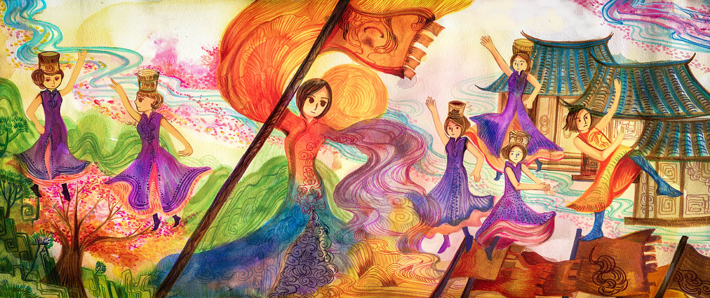
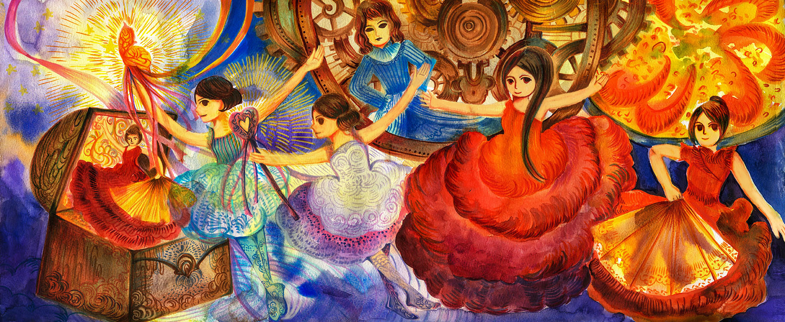
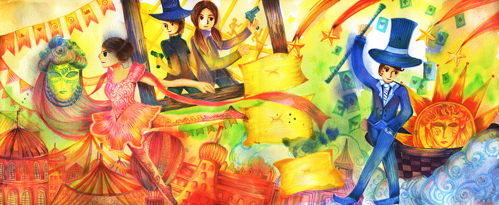
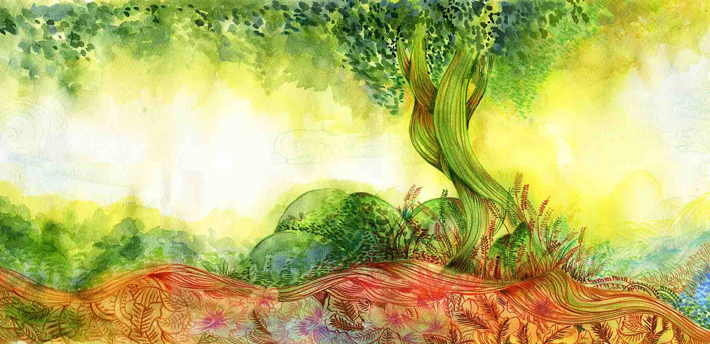

WU-YU Dance Conference booklet舞雩舞集 節目冊(2017)
Designed for WU-YU Dance Conference to celebrate theyhave established 25 years.
The client wanted to apply three concepts: Magic, East traditional dance and Spanish cultures to combine them together in each image.
Using bright colours to present childern's performance.
The book cover presents the dancing spirit like a tree growing up year by year like life.
成立25 周年的孩童舞蹈團，客戶需求為以插圖呈 現多種舞曲的概念意象，封面希望能呈現25 年以 來的向下扎根而逐漸茁壯成長，生生不息的傳統 與現代舞蹈之美。

The client wanted to apply three concepts: Magic, East traditional dance and Spanish cultures to combine them together in each image.
Using bright colours to present childern's performance.
The book cover presents the dancing spirit like a tree growing up year by year like life.
成立25 周年的孩童舞蹈團，客戶需求為以插圖呈 現多種舞曲的概念意象，封面希望能呈現25 年以 來的向下扎根而逐漸茁壯成長，生生不息的傳統 與現代舞蹈之美。


 第七個網頁：回到 首頁